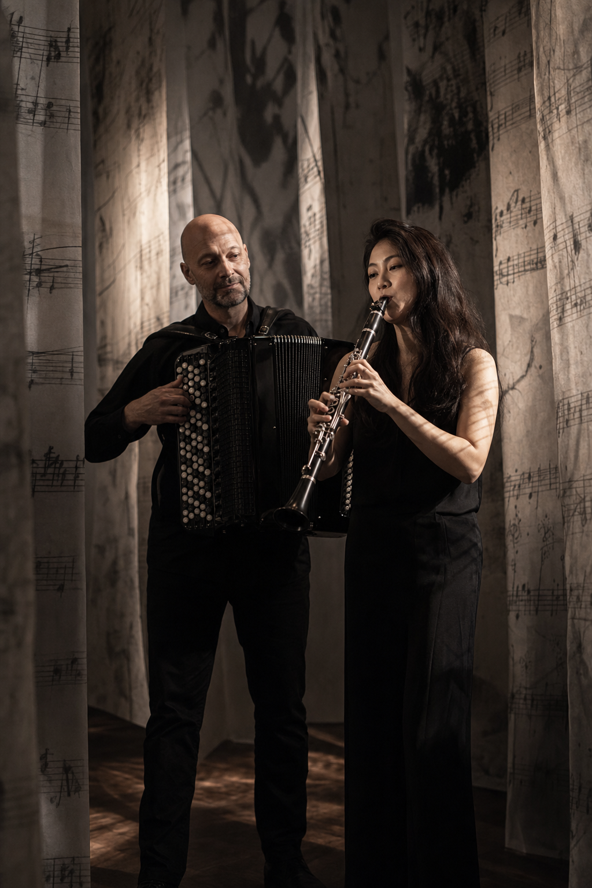
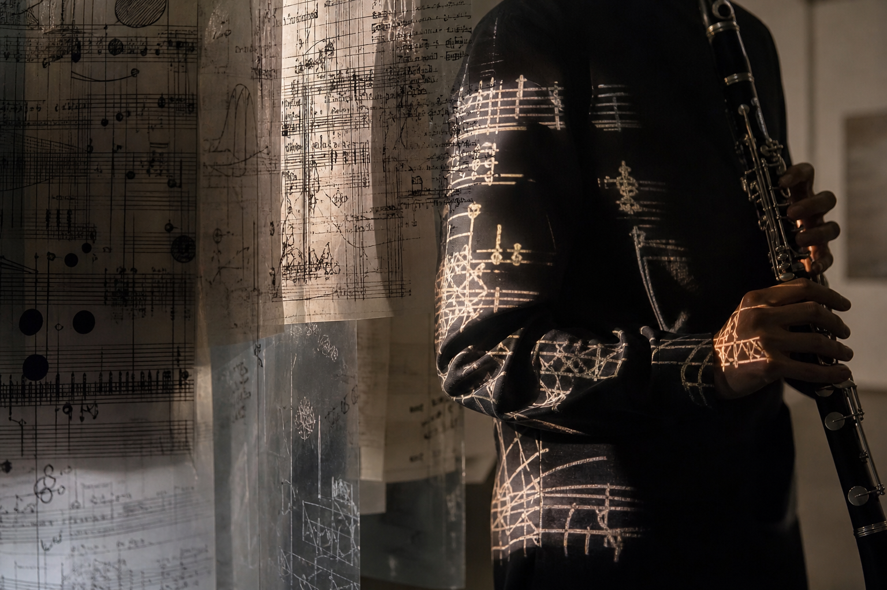
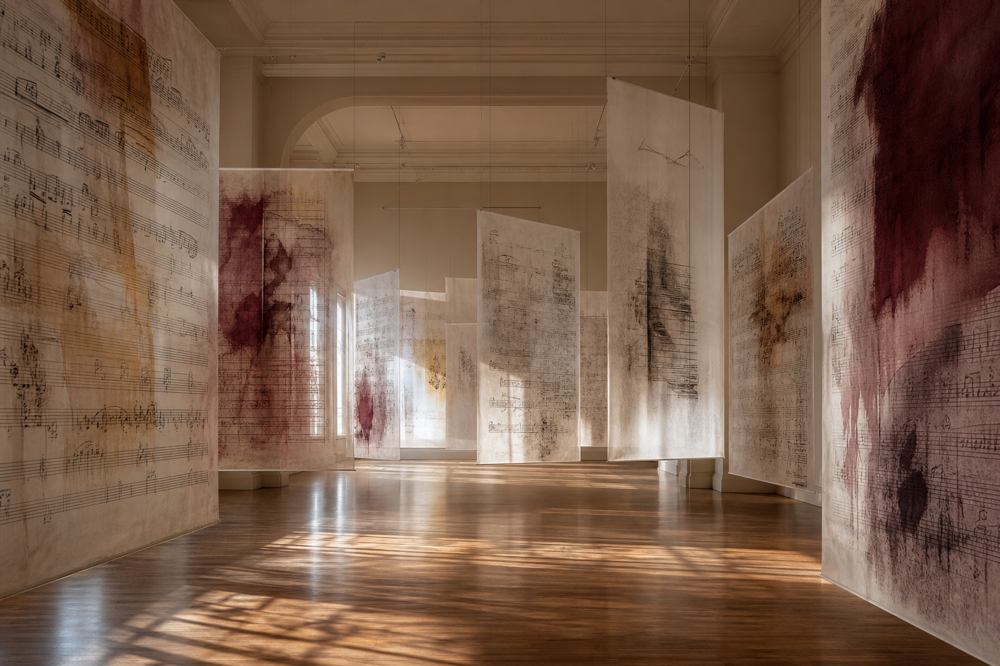

Bach erlebbar machen — in Klang, Linie und Farbe
Ein Gesamtkonzept aus Musik, Rauminstallation und Licht — zwischen Konzertsaal und Galerie.
Das interdisziplinäre Projekt »KlangSpuren – Bach in Linie, Luft und Farbe« vereint das musikalische Programm »Duo KlAkk! goes Bach« mit den bildenden Kunstwerken der renommierten Künstlerin Linda Schwarz. Im Zentrum steht die direkte, werkgetreue Interpretation der Gambensonate von Johann Sebastian Bach für Klarinette und Akkordeon.
Durch die Synthese von Klarinette, Akkordeon und bildender Kunst entsteht ein Raumkonzept, das die musikalische Klarheit und die emotionale Tiefe von Bachs Werk in Musik, Linie und Farbe erlebbar macht. Das Projekt verbindet Konzertsaal und Galerie und bietet dem Publikum einen multisensorischen Zugang zu Bachs Klassik.
- Ensemble
- Duo KlAkk!
- Klarinette
- Ji Eun Kim
- Akkordeon
- Harald Oeler
- Kollaboration
- Linda Schwarz
- Schwerpunkt
- Werkgetreue Interpretation
- Sparte
- Kammermusik & Bildende Kunst
Visuelle Polyphonie
Bachs kontrapunktische Schichtung trifft auf die visuelle Schichtung in den Arbeiten von Linda Schwarz.
Während das Duo KlAkk! Bachs Gambensonate in einer klaren, werkgetreuen Interpretation zum Klingen bringt, erzeugt die bildende Künstlerin Linda Schwarz eine visuelle Entsprechung der musikalischen Linienführung. Die Partituren werden in grafische Strukturen transformiert und auf transparente Materialien gedruckt, die im Raum als vielschichtige Schichten (Layer) hängen. Durch gezielte Beleuchtung projizieren sich die Notenhandschriften und grafischen Strukturen direkt auf die Musiker, ihre Instrumente und die Raumwände.
Die Bewegung der Musiker und der gemeinsame Luftstrom von Klarinette und Akkordeon lassen die visuelle Ebene dynamisch im Raum resonieren. Die Musik wird zum Licht, der Schatten zum Raum — eine klare, lebendige Darstellung von Bach.
-
IRauminstallationInstallation im Raum
Auf transparente Materialien (z. B. großformatiges Tracing-Papier oder Folien) gedruckte Partitur-Transformationen von Linda Schwarz hängen als vielschichtige Schichten (Layer) im Bühnenraum.
-
IILicht & ProjektionSchattenpartituren
Gezielte Beleuchtung projiziert die Notenhandschriften und grafischen Strukturen Bachs durch die Kunstwerke hindurch direkt auf die Körper der Musiker, ihre Instrumente sowie auf die Raumwände.
-
IIIBewegung im RaumVisuelle Polyphonie
Durch die Bewegung der Musiker und den gemeinsamen Luftstrom von Klarinette und Akkordeon resoniert die visuelle Ebene dynamisch im Raum. Die Musik wird zum Licht, der Schatten zum Raum — Polyphonie als optisch-akustisches Ereignis.
Die Musik wird zum Licht, der Schatten zum Raum — und das Publikum erlebt Polyphonie mit allen Sinnen.
Zwei Kunstformen, ein Werk
Das Alleinstellungsmerkmal liegt in der spartenübergreifenden Verschränkung zweier eigenständiger Kunstformen auf höchstem künstlerischem Niveau: Die im professionellen Konzertbetrieb seltene kammermusikalische Besetzung Klarinette/Akkordeon trifft auf zeitgenössische bildende Kunst.
Anstatt die bildende Kunst lediglich als dekorativen Hintergrund zu nutzen, wird sie zum strukturellen und dramaturgischen Bestandteil der Aufführung. Diese Symbiose erzeugt ein multisensorisches Gesamtkunstwerk mit klarer Relevanz für zeitgenössische wie regionale Kulturförderung.
Nahbar, begehbar, dialogisch
Um das Publikum aktiv einzubinden und Barrieren gegenüber zeitgenössischen Darstellungsformen abzubauen, integriert das Projekt nahbare Vermittlungselemente:
- Pre-Talk Einführendes Moderationsgespräch zwischen Duo KlAkk!, Linda Schwarz und dem Publikum — Einblicke in Entstehungsprozess, Werke und Transkriptionen.
- Klang-Galerie Vor und nach der Aufführung: begehbare Rauminstallation — das Publikum erkundet die visuellen Schichten der Partituren aus nächster Nähe.
Kontakt · Antragsteller
- Harald Oeler
- +49 176 7004842
- duoklakk@gmail.com
- Ensemble
- Duo KlAkk!
Rauminstallation
Illustrative Visualisierungen · keine Aufführungsfotos
Licht · Galerie
Schattenpartituren & begehbare Installation

